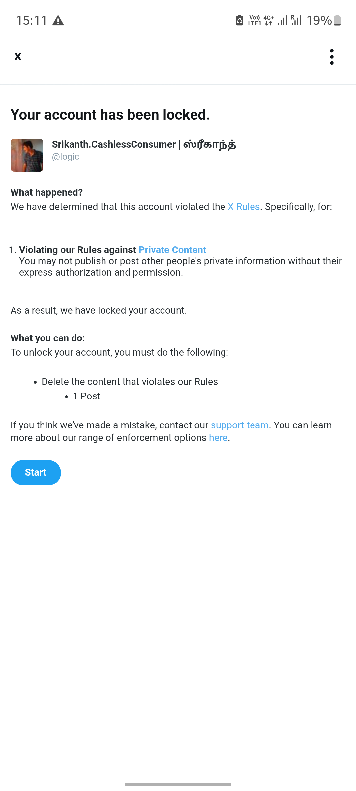
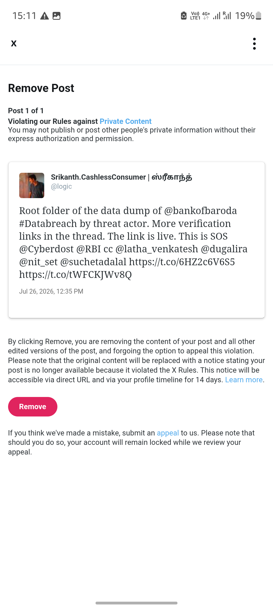
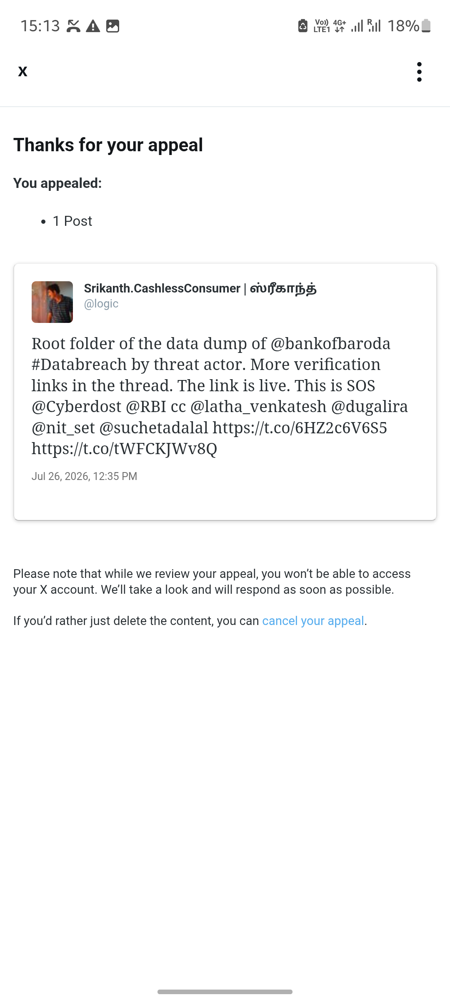

On 28 July 2026, X (formerly Twitter) restricted the @logic account — CashlessConsumer — for posting about the Bank of Baroda data breach. The stated reason: "Violating our Rules against Private Content".
This page documents what happened, why it matters, and how you can help push back.
26 Jul 2026 — The Breach Goes Public
Triple X ransomware group publishes Bank of Baroda's stolen data on the Tor network. CashlessConsumer begins independent analysis to help affected consumers verify exposure.
27 Jul 2026 — Consumer Assistance Goes Live
bobbreach.cashlessconsumer.in launches with IFSC-based branch search. Multiple posts educate consumers about the breach, attack vector, and protective steps. Posts include references to the data dump — all publicly available information.
28 Jul 2026 — Account Restricted
X locks the @logic account, flags a post about the breach for "Violating our Rules against Private Content", and demands the post be removed before the account can be used again.
28 Jul 2026 — Appeal Filed
An appeal is submitted arguing that sharing information about a mass data breach — including links to the publicly available data dump for verification — is in the public interest. Result: Pending.
Three screenshots were taken at the time of the restriction, documenting the full sequence.
1. Account Locked
"Your account has been locked" — Violating rules against Private Content. Must remove post to proceed.

2. Flagged Post
The flagged post — referencing a data dump of Bank of Baroda and tagging @Cyberdost and @RBI for official attention.

3. Appeal Submitted
X acknowledges the appeal. Under review. The post remains online while the appeal is pending.

1. "Private Content" rule applied to a public breach.
Bank of Baroda's data was published by ransomware actors on the public Tor network. Sharing the existence of this data dump — and helping consumers verify if their branch was exposed — is not "private content." It is public interest reporting on a confirmed cyber incident.
2. Consumer advocacy is being treated as a violation.
The post did not share private individuals' data. It referenced the data dump by name and linked to an independent consumer assistance site that maps exposed branches via IFSC codes. This is the same kind of work that journalism outlets and security researchers do routinely after major breaches.
3. Convenient timing for Bank of Baroda.
Bank of Baroda has been criticised for minimal communication — a one-page statement with no details on affected customers, data categories, or remediation steps. Silencing the independent voice that did provide consumers with actionable information conveniently removes the pressure on the bank.
4. A chilling effect on security research.
If posting about publicly available data dumps — with the explicit goal of helping consumers protect themselves — gets accounts restricted, it sets a dangerous precedent. Banks can simply report consumer advocates to platform moderation teams to silence breach disclosure and avoid accountability.
X does not disclose who reports content. But we can reason about it.
The Likely Candidates:
⚠️ We are not making an accusation — we are documenting the objective sequence of events and the incentives at play. The appeal to X should determine whether this was correctly enforced. If it was not, the entity that filed the false report should be held accountable.
Using platform content policies to silence a consumer advocate who is helping breach victims is a form of cyber bullying. It is the digital equivalent of a bank telling customers: "You are not allowed to discuss our data breach with each other."
The reporter weaponised X's "Private Content" policy — a rule designed to protect individuals from doxxing — to suppress public interest breach reporting. This is a textbook example of lawful but unethical platform manipulation: exploiting content moderation rules for corporate reputation management.
If you believe that consumer advocates should be able to report data breaches without being censored, here's what you can do:
1. Tag X Review / X Support
Post tagging @XReview and @XSupport asking them to review this enforcement action. A consumer advocate was silenced for reporting a bank data breach in the public interest.
Suggested tweet:
@XReview @XSupport A consumer researcher was silenced for posting about the Bank of Baroda data breach — helping consumers check if their accounts were exposed. The post was flagged under "Private Content" but contained only public information. This looks like a bank using moderation to suppress breach disclosure. Please review. bobbreach.cashlessconsumer.in/pages/censorship.html
2. Share This Page
Send this page to anyone who cares about consumer rights, data breach accountability, or platform censorship. The more people who see it, the harder it is to ignore.
3. Call on Bank of Baroda to Respond
Ask @bankofbaroda directly: Did you or your agents report this post? Do you believe consumer advocates should be silenced for discussing your data breach?
⚠️ This is an independent documentation effort. We are not affiliated with X Corp, Bank of Baroda, or any government agency. This page is published for transparency and consumer advocacy purposes.